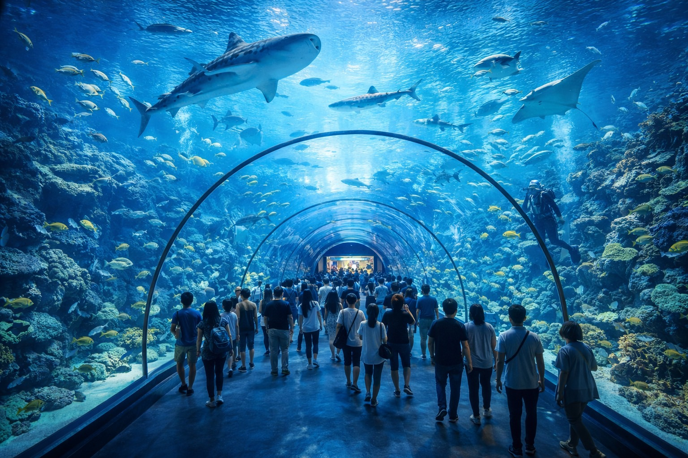
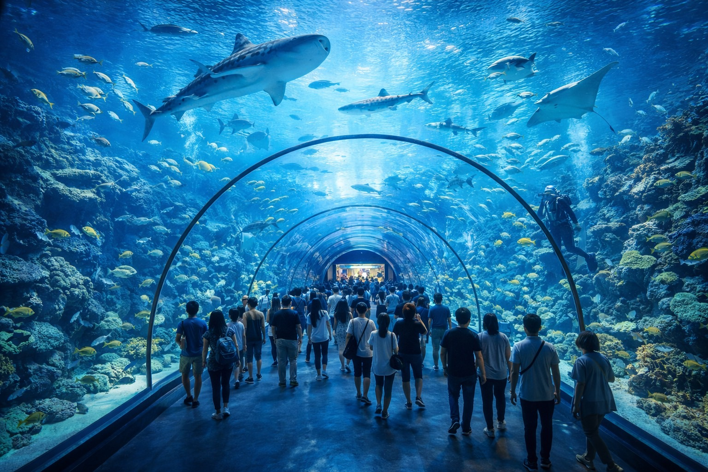

周邊景點
-
Aurelia 海灘
步行 5 分鐘，適合晨跑與日出觀賞。
-
海岸步道
步行 10 分鐘，沿途有觀景平台與自行車道。
-
海洋文化博物館
開車約 15 分鐘，可了解在地漁村與海洋生態。
 -
夜市 / 老街
開車約 12 分鐘，品嚐在地小吃與手工藝品。
步行 5 分鐘，適合晨跑與日出觀賞。
步行 10 分鐘，沿途有觀景平台與自行車道。
開車約 15 分鐘，可了解在地漁村與海洋生態。
開車約 12 分鐘，品嚐在地小吃與手工藝品。